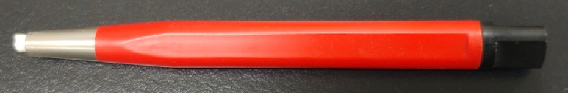

- Calibration
- Cleaning
- Sample preparation
- Characterize Tg
- Export Data
- Errors and issues
Cleaning
Dampen the end of a small cotton swab with EtOH or Acetone. Avoid saturating the swab to prevent the solvent from dripping into the Tzero thermocouple tube.
Dry the interior of the cell with a clean dry swab.
Heat the cell to 200°C and hold for 10 minutes to remove all traces of solvent.
Verify by running an empty baseline run.
If you are unable to remove the anomalies using the above procedure,
Lightly brush out the cell with a small fiberglass brush. Then remove the residue from the cell using compressed air.
